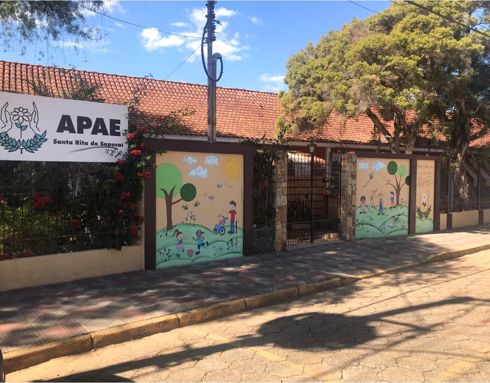

Email: santaritadosapucai@apaebrasil.org.br
Telefone: (35) 34712411
Avenida Francisco Bilac Pinto,229 • CEP: 37540000 • Santa Rita Do Sapucaí • MG
|

A APAE é uma instituição filantrópica, que presta atendimento nas áreas de assistência social, educação e saúde para pessoas com deficiência intelectual, , física, múltipla, atrasos no desenvolvimento, autistas, psicose infantil, síndromes diversas, etc. Oferece serviços nas áreas de Assistência Social: atenção integral a pessoa com deficiência e apoio a família ; Saúde: fisioterapia, estimulação precoce para bebês, fonoaudiologia, odontologia, neurologia, pediatria, psicologia e terapia ocupacional; Educação : Educação Infantil (Pré-Escolar), Ensino Fundamental (1º a 5º ano ); Educação Profissional ( Preparação Profissional, Qualificação Profissional e Inserção no Mercado de Trabalho) ; Educação de Jovens e Adultos (EJA), Centro Dia para Adultos e Idosos com Deficiência e Apoio Especializado (psicomotricidade, salas de recursos e informática adaptada). A entidade foi fundada em 30 de Setembro de 1969, por membros da sociedade santa-ritense, “com finalidade precípua de prestar a mais ampla assistência às pessoas excepcionais de ambos os sexos, sem considerar - lhes a idade, raça, religião, credo político, condição social e financeira, nacionalidade ou naturalidade”. A APAE de Santa Rita do Sapucaí é uma instituição filantrópica que sobrevive com recursos oriundos de doações, parceria com o poder público e promoção de eventos. Porém, estes recursos são insuficientes para garantir a manutenção e a assistência a que a entidade se propõe neste momento. Atualmente, o que mais aflige a instituição é a limitação dos recursos, insuficientes para custear o pagamento da equipe que, mesmo neste momento de crise, encontra-se engajada. Estamos impossibilitados de realizar eventos para complementar a receita. Portanto, torna-se de suma importância um projeto que venha garantir uma ajuda ao custeio dos colaboradores da instituição necessários para garantia dos atendimentos em curso. |
|---|